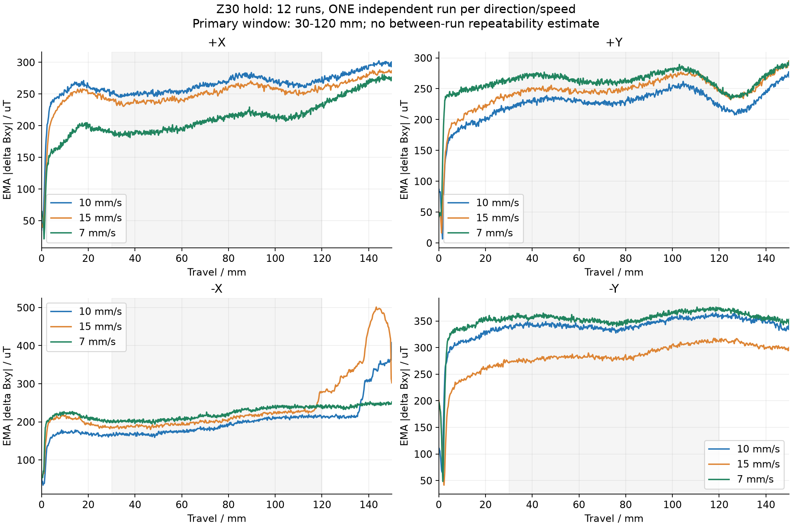
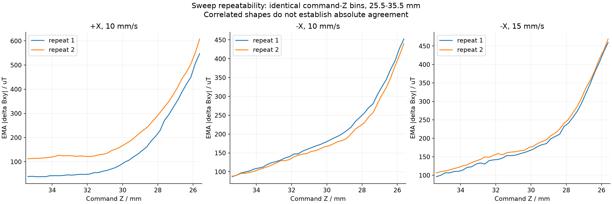
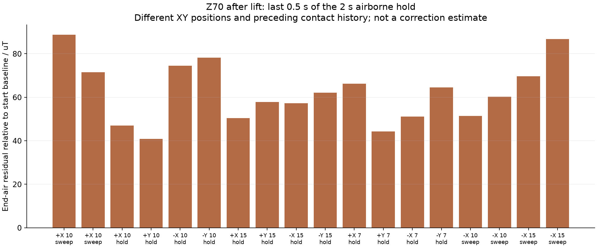

Z30每个方向/速度仅一笔，不能估计跨笔重复性或作方向/速度因果结论。
+X两次扫描形状高度相关，但绝对响应相差约71 uT，尚不能平均成已验证前馈表。
本次四笔-X扫描未重现9/27的大幅局部回落，但不能解释旧异常原因。
完整Z30定高曲线仍有后段异常：-X的10/15 mm/s在约120-150 mm明显增大，15 mm/s峰值约500 uT；该段保留展示，不纳入预先规定的30-120 mm主统计窗口。
Z70末段仍有40-89 uT空载残差，需要空载往返区分位置磁场与卸载/漂移影响。
暂停直接扩展Z35/Z27的48笔；优先空载对照及补齐Z30第二轮。
沿程30-120 mm；每格仅一笔。
| 方向 | 7 mm/s | 10 mm/s | 15 mm/s |
|---|---|---|---|
| +X | 209.36 | 263.83 | 251.03 |
| +Y | 267.80 | 232.01 | 250.01 |
| -X | 216.61 | 184.60 | 201.97 |
| -Y | 357.01 | 342.69 | 283.11 |



所有统计以命令高度为口径，不是法向力或笔毫实际压入量。
TCP按请求起止中点筛阶段，只作异步几何诊断，不作逐点同步真值。
方向与倾斜姿态同时变化；速度与固定顺序、补水、时间可能混杂。
空载末端残差不是可直接扣除的接触信号偏置。
曲线分箱不是独立实验重复；未选择性排除局部异常。
1. 补齐Z30第二轮：四方向，各速度再采一笔；速度顺序7→15→10 mm/s。每笔统一补水、控滴、等待，使用新纸带，记录补水和纸面编号。 新增12笔。
2. +X、-X空载往返对照：10 mm/s，Z70，沿原150 mm路径往返，各2次。始终保持本方向15度姿态，起点、终点、返回起点各停10 s，全程无接触。记录原始三轴及TCP。当前入口没有空载模式，不能把hold高度直接改成70。 新增4笔。
3. 只有定高重复与空载零点影响可解释后，先补10 mm/s下Z35、Z27，四方向各2笔。 新增16笔。
4. 确认速度差异可重复后，再补Z35、Z27下7和15 mm/s，四方向各2笔。 新增32笔。